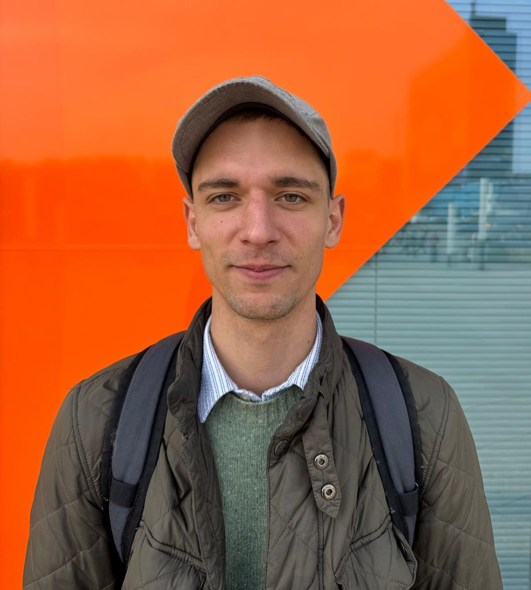

Uczę matematyki i analizy danych. Badam, jak ludzie się ich uczą.
To nie są dwie osobne rzeczy. Na co dzień pracuję nad tym, w jaki sposób pojęcia matematyczne biorą się z ruchu i wspólnego działania — i to samo wykorzystuję, kiedy siadam z uczniem nad układem równań albo z magistrantką nad regresją, której nie umie zinterpretować.
Doktorant Międzydziedzinowej Szkoły Doktorskiej Uniwersytetu Warszawskiego (dyscypliny: matematyka i psychologia). Absolwent Informatyki na Politechnice Warszawskiej i Kognitywistyki na UW. Ponad osiem lat uczenia matematyki i informatyki, w tym w Classical School (d. Akademeia Tutoring College).

Co prowadzę
Zajęcia indywidualne, 60 minut. Online — w całej Polsce i poza nią; stacjonarnie — u mnie na Saskiej Kępie.
Analiza danych i statystyka
Studenci, magistranci, doktoranci — psychologia, kognitywistyka, socjologia, nauki społeczne
- Część empiryczna pracy licencjackiej, magisterskiej i doktorskiej — od pytania badawczego do wyników
- Projekty zaliczeniowe i statystyka „na wczoraj"
- Dobór testu i sprawdzenie założeń, o które nikt nie pyta, dopóki nie zapyta recenzent
- Regresja, ANOVA, wielkość efektu, modele mieszane
- R, Python, SPSS, JASP — pracujemy w tym, czego wymaga Twój promotor
- Opis wyników i tabele w standardzie APA
Matematyka — egzaminy
Egzamin ósmoklasisty i matura (podstawa i rozszerzenie)
- Diagnoza na start: arkusz, rozmowa, plan na cały rok zamiast łatania dziur
- Praca na arkuszach CKE na czas — od stycznia to jest sedno przygotowania
- Zapis rozwiązania i punktowanie krok po kroku, bo tam giną punkty
- Materiały i zadania między lekcjami
Programowanie i informatyka
Od pierwszego skryptu po projekt, który da się pokazać
- Python od podstaw, myślenie algorytmiczne
- Bazy danych i SQL
- Prowadzenie własnego projektu od pomysłu do działającej aplikacji — przykłady niżej
- Zajęcia po polsku i po angielsku
Dlaczego akurat ja
Korepetytorów matematyki są setki. Różnica jest taka, że uczenie się matematyki jest moim tematem badawczym, a nie tylko zajęciem.
„It's Our Move: Mathematical Perception Emerges for Coordinating Joint Action" — badanie nad grą OЯTHO, w której dwoje dzieci prowadzi wspólnie kulkę przez labirynt: jedno odpowiada za oś poziomą, drugie za pionową. Nikt nie tłumaczy im układu współrzędnych — on pojawia się jako sposób na dogadanie się. Przebadaliśmy ponad 1200 graczy, żeby sprawdzić, która kolejność zadań realnie buduje to rozumienie. Abrahamson, D., Tancredi, S., Xiao, A., Li, X., Weiss, M., Potega vel Żabik, K., & Dimmel, J. K. (2026). Canadian Journal of Experimental Psychology. doi:10.1037/cep0000414
Dydaktyka akademicka
- Cognitive Processes Modeling II — główny prowadzący laboratoriów na studiach magisterskich Cognitive Science UW (60 godz., 6 ECTS). Modelowanie kategoryzacji, pamięci, podejmowania decyzji, koordynacji ruchowej — w praktyce, w kodzie. Uniwersytet Warszawski, 2025/2026
- Learning, adaptation and uncertainty: machine learning for cognitive modeling — współprowadzenie, w tym część wykładów. Uczenie ze wzmocnieniem, algorytmy rojowe, filtry Kalmana. Uniwersytet Warszawski, 2025/2026
Szkoła i korepetycje
- Classical School (d. Akademeia Tutoring College) — matematyka i informatyka, przygotowanie do A-levels.od 2020
- Symposio — kursy maturalne z matematyki.
- Liceum w Chmurze — matematyka i informatyka.2021–2022
- L.O. im. Zuzanny Ginczanki — matematyka i informatyka.2021–2022
- Otwarte Centrum Edukacyjne — Edukacja Domowa Ursynów.
- Korepetycje indywidualne, wszystkie poziomy.ponad 8 lat
PythonRSQL JavaStatystyka Analiza szeregów czasowychAnaliza rekurencyjna Eye-trackingUczenie maszynowe
Projekty, które prowadziłem z uczniami
Najlepszy dowód, że coś zadziałało, to rzecz, która działa. Poniżej dwa projekty doprowadzone do końca przez osoby, z którymi pracowałem — od pustego pliku do repozytorium, które da się pokazać.
Analiza kompozycji zapachowych metodami grafowymi
Malina Wyszyńska
Zbiór około 60 tysięcy perfum. Dane wyciągnięte i połączone w SQL-u, przygotowane w pandas, a potem zbudowany graf, w którym składniki są węzłami, a ich współwystępowanie krawędziami. Miary centralności i klastrowanie pokazały, które nuty organizują kompozycje.
PythonSQLpandasNetworkXPlotly
System planowania dostaw — aplikacja webowa
Zuzanna Dakowska
Aplikacja we Flasku, w której sklepy składają zamówienia, a kierowcy rozwożą je samochodami o ograniczonej pojemności. Schemat bazy napisany od zera w SQL-u, zapytania z joinami bez ORM-a, mapa punktów w Folium i planowanie trasy heurystyką najbliższego sąsiada. Do tego dokumentacja architektury z diagramami warstw i przebiegu żądania.
PythonFlaskSQLiteJinja2Folium
Repozytorium prywatne — chętnie pokażę na rozmowie.
Kontakt
Najprościej mailem — napisz, na czym stoisz i do kiedy potrzebujesz. Odpisuję zwykle tego samego dnia.
Jak pracuję
- Pierwsza lekcja to diagnoza — sprawdzamy, gdzie naprawdę jest problem, i układamy plan.
- Program pisany pod konkretną osobę, nie kolejny rozdział z podręcznika.
- Zajęcia po polsku i po angielsku.